個案主檔
「目前照護階段」「照護階段歷程」「變更照護階段」改為照護模式；識別碼欄位「信祥系統 ID」改為「杏翔系統 ID」。
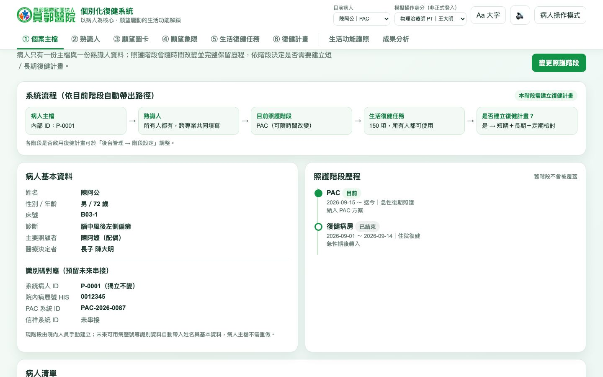
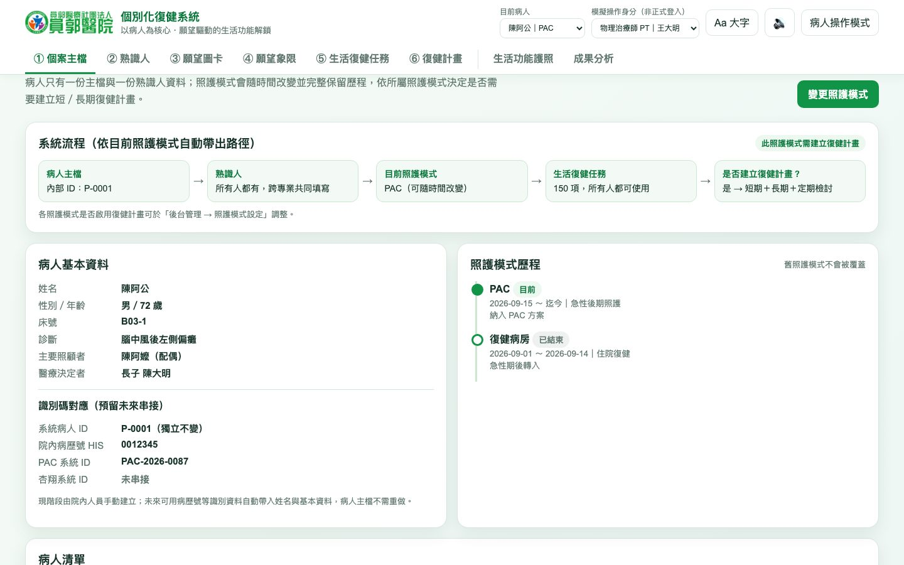
左邊是改動前（main），右邊是改動後（分支 revise/20261014）。系統畫面用同一份內建示範資料、同一個時間（2026-10-14 07:56）分別在兩個版本上操作截取，只有程式不同。
產生時間：2026/10/15 12:39:56。數字與 commit 清單以產生當下的工作目錄為準。
10/14 確認的 6 項修改，以及之後勾選的 4 個候選項目。點「看畫面」跳到對應的前後對照。
| 項目 | 改動前 | 改動後 | |
|---|---|---|---|
| 信祥 → 杏翔 | 外部系統名稱寫成「信祥」 | 全部改為「杏翔」（杏翔股份有限公司） | 看畫面 |
| 照護階段 → 照護模式 | PAC、復健病房、一般復健、OPD 稱為「照護階段」 | 稱為「照護模式」；「階段」只留給入院到出院的六個流程階段 | 看畫面 |
| 熟識人補上藥師，可彈性調整 | 7 個專業，固定寫在程式裡 | 8 個專業（新增藥師）；後台可改名、停用、新增欄位與自訂區塊 | 看畫面 |
| 計畫時程可調整 | 固定 14～21 天檢討、80 天修訂 | 系統預設 → 照護模式預設 → 個案設定（天數或指定日期） | 看畫面 |
| 生活護照不區分版本 | 分成「護照 1.0」與「護照 2.0」兩個分頁 | 單一頁面；每個願望列出對應的生活任務 | 看畫面 |
| 協助夥伴 → 共學夥伴 | 任務視窗寫「協助夥伴」 | 改為「共學夥伴」 | 看畫面 |
| C1 六種階段 | 第 5 頁底部寫「轉換階段時新增一筆歷程」，沒有區分六個流程階段 | 補一行「入院到出院共有六種階段，各流程階段的操作都寫入操作紀錄」 | 看畫面 |
| C2 報告版移除內部提示 | 第 26 頁副標寫「如實報告目前的系統狀態」 | 改為對聽眾的說明；講稿保留提示 | 看畫面 |
| C3 時程 | 第 27 頁為「展示版 → 欄位確認 → 正式上線 → 成果分析」 | 流程確認（現在～11 月）→ 系統落地（預計 12 月底）→ 場域示範（預計 1 月～3/30）→ 系統串接（第二期） | 看畫面 |
| C4 待修訂個案總覽 | 沒有集中查看的地方 | 後台「提醒總覽」：依到期先後列出個案，可篩選並直接開啟計畫 | 看畫面 |
示範病人為陳阿公（PAC），角色為物理治療師；後台畫面以管理員身分截取。
「目前照護階段」「照護階段歷程」「變更照護階段」改為照護模式；識別碼欄位「信祥系統 ID」改為「杏翔系統 ID」。


視窗標題與欄位改為「照護模式」，說明改為「舊照護模式會保留在歷程中」。
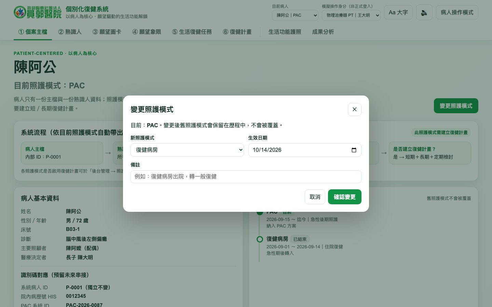
分頁多了「藥師」。後台新增的自訂區塊（例如家屬）也會出現在這一列。
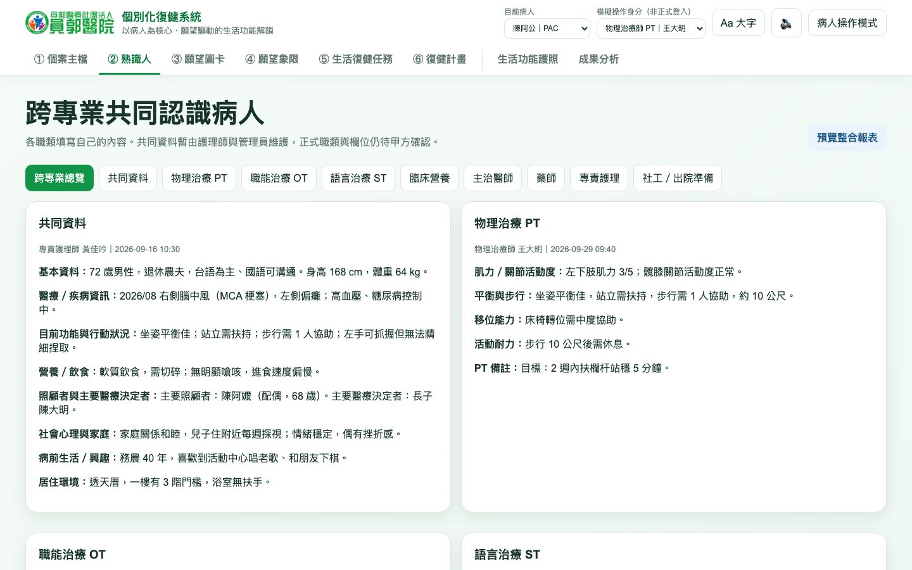
分頁名稱由「階段設定」改為「照護模式設定」；新增各照護模式的「檢討（天）」「修訂（天）」欄位；說明不再寫死 80 天。
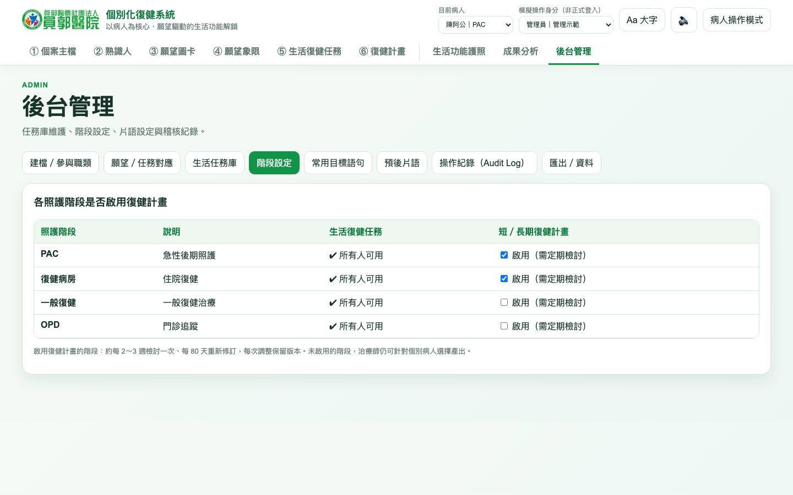
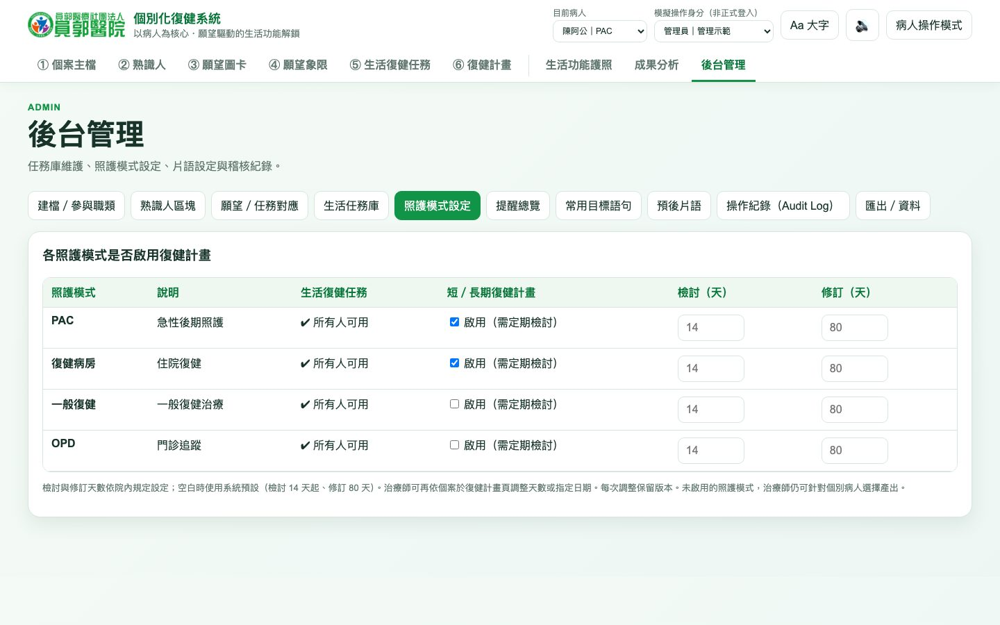
可調整區塊與欄位名稱、啟用或停用、新增欄位、新增自訂區塊。停用只隱藏，不刪除已填內容。
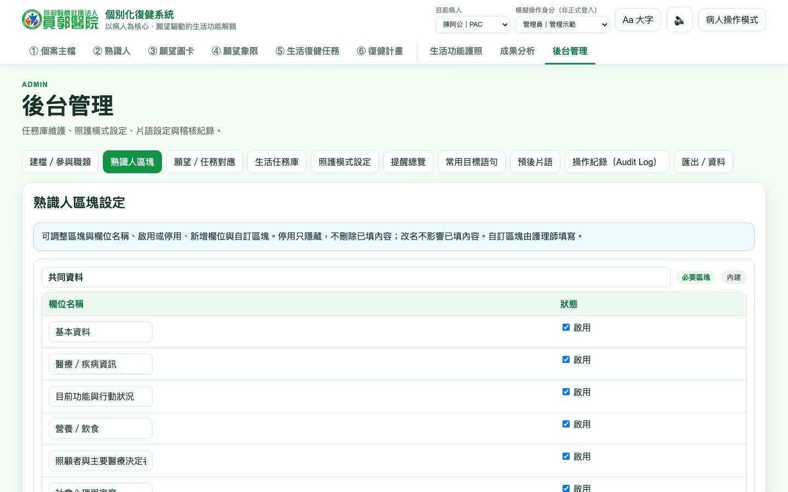
列出所有需要復健計畫的病人，依下一個檢討或修訂日期排序；可篩選已到期、7 天內、14 天內，並直接開啟該病人的計畫。
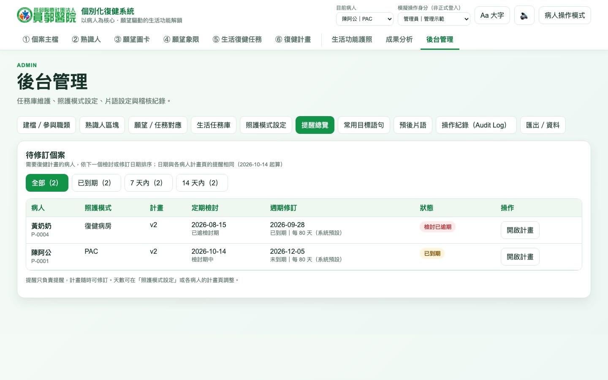
「80 天修訂」改為「週期修訂」，並標示天數來源；新增可展開的「提醒設定」；快轉按鈕改為「快轉到下次檢討／修訂」。
修訂類型改為「定期檢討（約每 14～21 天）」與「週期修訂（每 80 天）」，天數依實際設定顯示。
移除「護照 1.0／護照 2.0」分頁，頁首下方直接接獎盃櫃與成就徽章。
原本「護照 2.0」的內容併入同一頁；每個願望底下列出對應任務的狀態、短／長期與共學夥伴。
「協助夥伴」改為「共學夥伴」，選項不變。
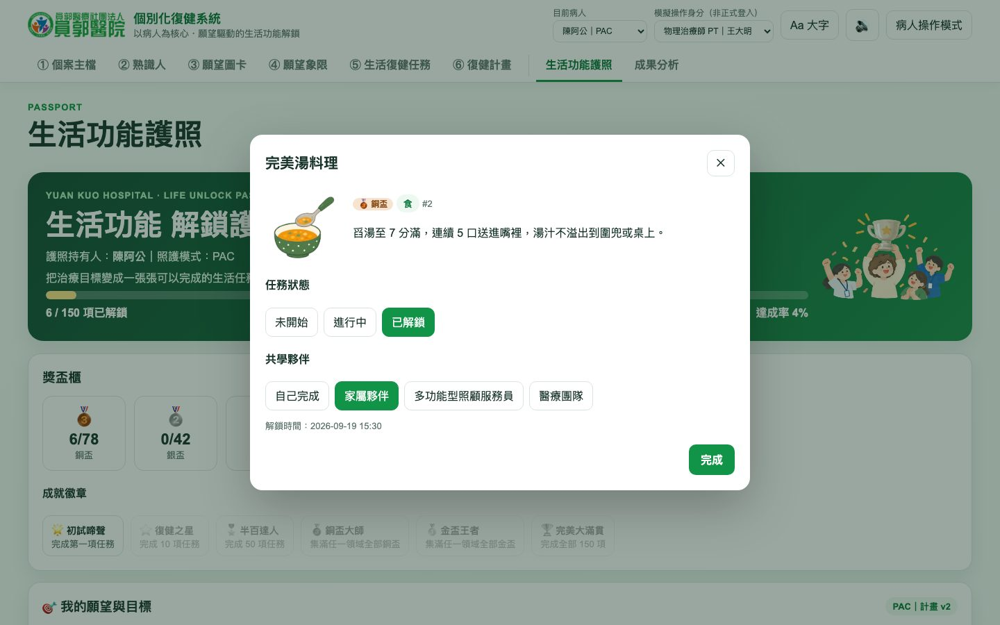
「病人照護階段分布」改為「病人照護模式分布」；表頭「目前階段」改為「照護模式」。
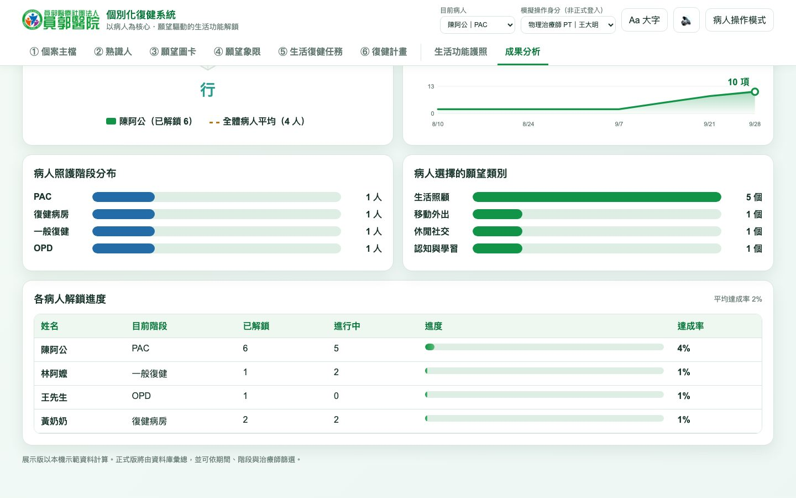
只列出有改動的 18 頁，其餘頁面沒有變動。
簡報內的系統截圖，改動前是在 Windows 上手動操作拍攝，改動後是在 Mac 上以腳本重拍。兩者的示範資料規模相近（8 位病人、張伯伯解鎖 89 項），但字型與個別數字不同。比對時請以畫面上的用詞與功能為準。
「照護階段」改為「照護模式」；「七個專業」改為「八個專業」；病人端說明改為「任務闖關＋願望與目標」。
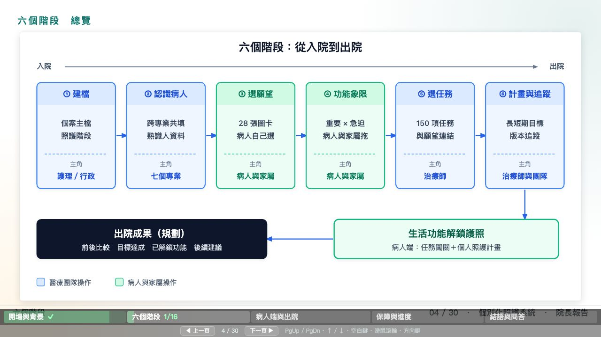
「四種照護模式」；識別碼「信祥」改為「杏翔」；轉換說明改為照護模式；補一行「入院到出院共有六種階段，各流程階段的操作都寫入操作紀錄」（C1）。
標題、重點句、圖說改為照護模式；截圖重拍，看得到「杏翔系統 ID」。
標題改寫；專業圖重排為 8 個專業加「＋ 其他（可彈性增加）」。
重點句改為「八個專業」；截圖重拍，分頁看得到藥師。
副標改為「所有照護模式的病人都可以使用」。
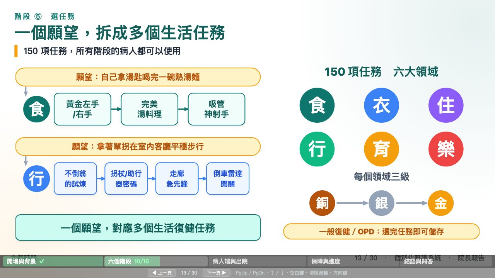
重點句改為「所有照護模式共用」；截圖重拍。
截圖重拍：週期修訂、個案設定每 60 天、提醒設定。
截圖重拍：儲存視窗預選「週期修訂（每 60 天）」。
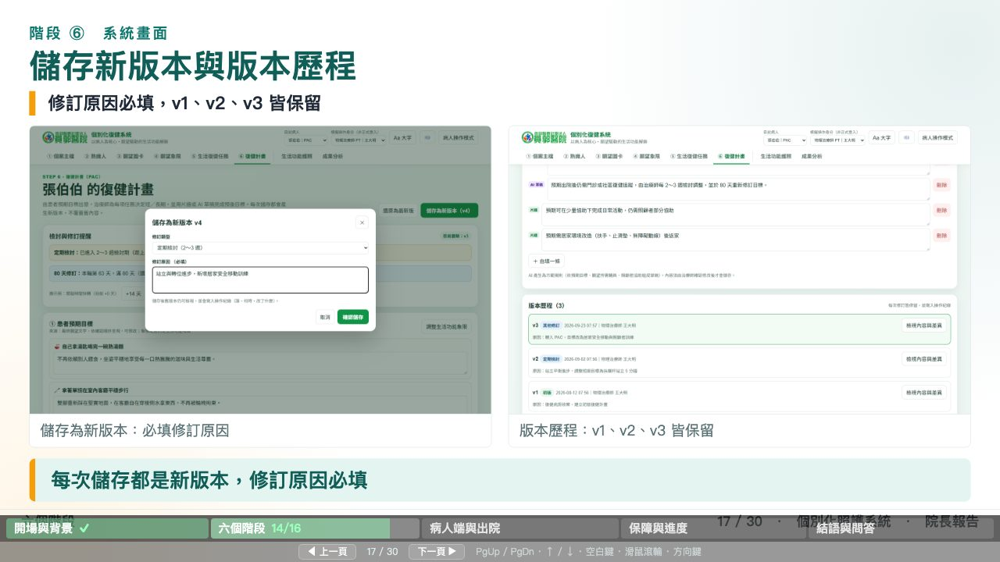
副標與追蹤機制圖改為「依個案設定」修訂、「定期檢討：天數依個案設定」。
移除「1.0／2.0」，改為「任務闖關」與「願望與目標」。
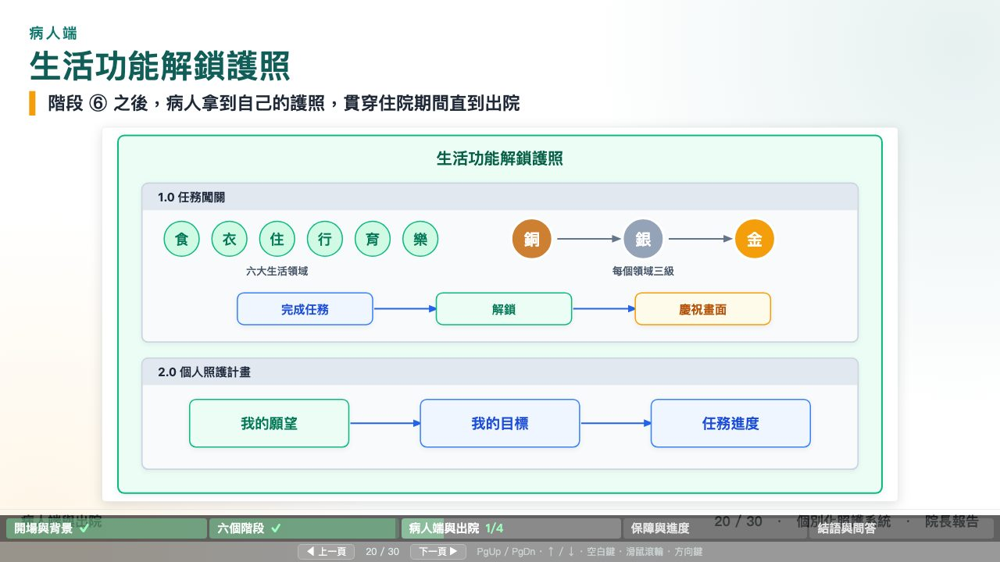
標題與重點句改寫；三張截圖改為整合後的護照；「協助夥伴」改為「共學夥伴」。
「照護模式、熟識人、計畫」皆保留歷史版本；「杏翔識別碼」。
副標改為「照護模式變更」；截圖改為 9/23 那一段，看得到計畫新版本、AI 草稿、照護模式變更、熟識人更新。
副標「如實報告目前的系統狀態」改為對聽眾的說明（C2）；補上「預計 12 月底改用正式資料庫」「串接 PAC 與杏翔排在第二期」（C3）。
原「四步走向正式上線」改為時程：流程確認、系統落地（預計 12 月底）、場域示範（預計 1 月～3/30，100 個案）、系統串接（第二期）（C3）。
重點句改為「照護模式與願望類別統計」；截圖重拍（8 位示範病人，張伯伯解鎖 89 項）。
「每種照護模式都要做計畫嗎？」「院方可依照護模式設定」。
行數取自 git diff --numstat main。綠色為新增行，紅色為刪除行。
| 檔案 | 新增／刪除 | 內容 |
|---|---|---|
| 系統程式 | ||
| assets/app-access.js | +11 −6 | 自訂區塊與新動作的權限 |
| assets/app-admin.js | +80 −12 | 熟識人區塊設定、名稱跳脫 |
| assets/app-analytics.js | +3 −3 | 照護模式用詞 |
| assets/app-plan.js | +142 −52 | 提醒設定、週期修訂、整合護照、共學夥伴 |
| assets/app.js | +23 −18 | 藥師、照護模式用詞 |
| assets/demo-core.js | +72 −4 | 資料版本 5、區塊合併、提醒計算 |
| assets/style.css | +9 −0 | 新區塊樣式 |
| 院長簡報 | ||
| _SVG／9 個圖解 | +15 −15 | 照護模式、杏翔、八個專業、依個案設定、護照不分版本 |
| _screens／20 個檔案（截圖與清單） | +74 −0 | 以腳本重拍；其中 19 個圖片檔為二進位檔，不計行數 |
| 院長專用個別人照護系統介紹.html | +15 −15 | |
| 院長專用個別人照護系統介紹.md | +62 −54 | |
| 文件 | ||
| 20261014_修訂開發與技術驗收紀錄.md | +158 −0 | 新增 |
| 操作示範與設計說明.md | +45 −43 | |
| 檢查工具 | ||
| tests／13 個檔案 | +1416 −4 | 瀏覽器測試、術語檢查、簡報檢查、截圖情境、不變量測試 |
| package.json 等 2 個檔案 | +57 −0 | Playwright 測試工具 |
a8df8f8feat: 10/14 確認的六項修改與後台提醒總覽f98b01adocs: 院長簡報同步 10/14 修改cdcbf40test: 新增瀏覽器驗收、版面、術語與簡報檢查工具在 yuankuo 資料夾的終端機執行。也可以在 VS Code 的「原始檔控制」中比較兩個分支。
git log --oneline main..revise/20261014git diff main..revise/20261014 -- html_demo_3/assets html_demo_3/index.htmlgit diff --word-diff main..revise/20261014 -- "*.md"cd html_demo_3 && node tests/compare-versions.cjs --base main